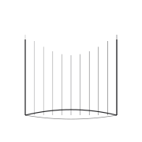
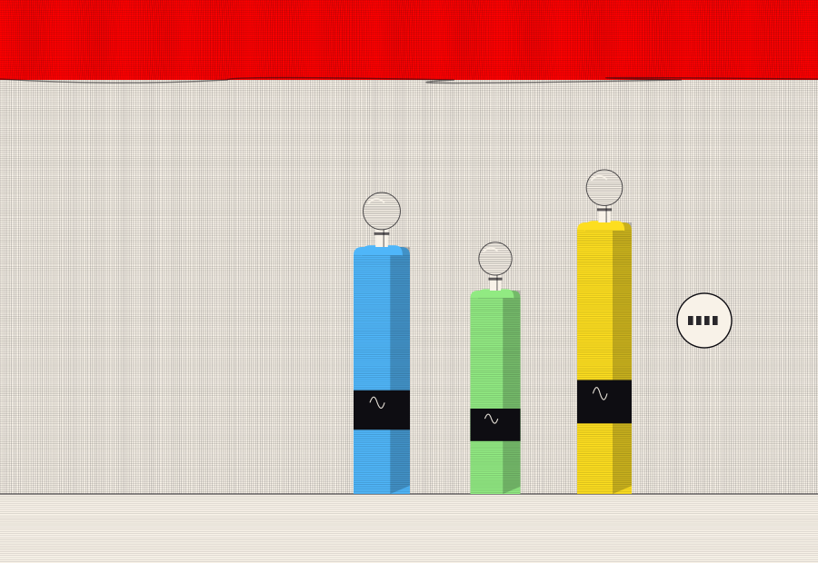
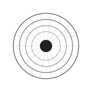
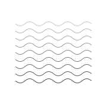
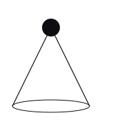

长夜行
一个替人写信的邮差，与一封永远寄不到的信。
剧 作 家 · 作 品 集
NOCTURNE
三幕音乐剧 · 剧本全文与分场提要 创作于二四年初春，翌年首演于南方某剧院

SCENE · 舞 台 效 果
色值由参考视频逐帧像素采样
排线为 1px 级细密刻线
THE BOTTLES — 三幕道具
WEBGL · HAND-HATCHED
WORKS · 剧 目
四个剧目，两种体裁。 此处陈列剧目梗概与首演记录。

一个替人写信的邮差，与一封永远寄不到的信。

一位抄书人抄录了整座海，也抄录了自己的亡妻。

铜制的鸟不会飞，却记得所有迁徙路线。

一个人反复练习迁徙，直到忘了自己从未飞过。
SCRIPT · 剧 本 选 段
「你写的那些信，最后都到了吗？」
「都到了。」 「——不。信都到了，人没到。」
〔灯光收窄至邮差面部。远处传来渡轮的汽笛，一声，两声。第三声没有响。〕
〔邮差把信按在桌上，又拿起，放进抽屉。抽屉关上的声音很轻。〕 〔窗外天色渐暗。舞台前沿的灯带亮起。〕
PERFORMANCE · 上 演 纪 录
47
场次
11
首演年份跨度
3
已完成剧目
9
在写剧目
PRESS · 评 语
「他把邮差写成一个不肯承认自己在等待的人。」
「剧本的呼吸感在今天的原创音乐剧里极为罕见。」
「铜鸟不会飞，但看完之后，你会希望它飞。」
以上评论摘自公开发表的演出报道与访谈记录，剧目名称与日期以各剧目正式演出档案为准。
以上评论摘自公开发表的演出报道与访谈记录，剧目名称与日期以各剧目正式演出档案为准。
ABOUT · 创 作 理 念
我的剧本几乎都从一件没做成的事开始——一封没寄出的信，一次没赶上的船，一句没问出口的话。 舞台能替我把它们说出来。所以我写作的方式更像整理：把散落的碎片排好，等它们自己显出顺序。
Chén Yǔ
陈 屿
已出版剧目集一册 创作年表 二〇一四 — 至今
剧作家 · 编剧